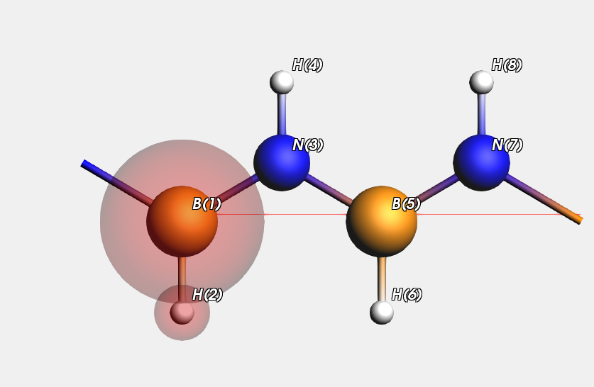

Example: Using capping atoms in a periodic system¶
Here we look at a polyethylene-like (infinite) chain, the carbons being alternatingly substituted with B and N atoms.
We will use a bunch of different QM systems in a QMMM setup, and check what happens. Inevitably we need to break B-N bonds, and hence capping atoms are used. (In the picture the QM region according to variant one is shown.) We also show the results obtained for the system with the pure QM and MM methods.
Let us have a look at the report generated by the example, that pretty much explains what is done
Download report PeriodicCapping.txt
We optimize the lattice and test several distances
The system can be cut in several variations into a a QM and an MM part breaking a B-N bond
variation QM atoms
var1 B(1),H(2)
var2 B(5),H(6)
var3 N(3),H(4)
var4 N(7),H(8)
var5 B(1),H(2),N(3),H(4)
var6 B(5),H(6),N(7),H(8)
Variation one is equivalent to variation two, and variation 3 should be equivalent with variation 4
Variation five is equivalent to variation six
Here are the distances (Angstrom) as obtained with a QM and an MM method
distance qm mm
B(1)-H(2) 1.182 1.185
B(5)-H(6) 1.182 1.185
N(3)-H(4) 1.007 1.045
N(7)-H(8) 1.007 1.045
B(1)-N(3) 1.431 1.508
B(5)-N(7) 1.431 1.508
Now we try the hybrid engine with several variations for the QM region
Two capping methods are tried as well.
variation capping energy B(1)-H(2) B(5)-H(6) N(3)-H(4) N(7)-H(8) B(1)-N(3) B(5)-N(7)
var1 fixed -2.901499 1.184 1.185 1.045 1.045 1.508 1.508
var1 fractional -2.787165 1.198 1.182 1.044 1.044 1.673 1.505
var2 fixed -2.901499 1.185 1.184 1.045 1.045 1.508 1.508
var2 fractional -2.787165 1.182 1.198 1.044 1.044 1.505 1.673
var3 fixed -4.791110 1.184 1.184 0.993 1.044 1.508 1.507
var3 fractional -4.733046 1.184 1.184 0.997 1.045 1.657 1.506
var4 fixed -4.791110 1.184 1.184 1.044 0.993 1.507 1.508
var4 fractional -4.733046 1.184 1.184 1.045 0.997 1.506 1.657
var5 fixed -6.741093 1.189 1.187 1.003 1.045 1.390 1.489
var5 fractional -6.648313 1.198 1.183 1.003 1.045 1.405 1.505
var6 fixed -6.741093 1.187 1.189 1.045 1.003 1.489 1.390
var6 fractional -6.648313 1.183 1.198 1.045 1.003 1.505 1.405
Here are some observations
* generally the fixed capping seems a bit better
Here are some remarks
* Starting from the initial very bad structure the fixed capping fails completely for variant 5 and 6
(not if you use as qm engine band and as mm engine dftb)
* A reasonable starting geometry can avoid strange collapses
* The more the two engines disagree about the capped QM region, the stronger the capping forces
#!/bin/sh
export NSCM=1
report=report.txt
STRUCTDIR=$AMSHOME/examples/Hybrid/PeriodicCapping/systems
# ensure that not a comma is used for decimals in the printf function
LC_NUMERIC=en_US.UTF-8
export AMS_JOBNAME=reference
rm -rf $AMS_JOBNAME.results
$AMSBIN/ams<<EOF
Task GeometryOptimization
GeometryOptimization OptimizeLattice=yes Method=FIRE MaxIterations=300
System
GeometryFile $STRUCTDIR/var1.xyz
GuessBonds true
end
Engine DFTB
EndEngine
EOF
aaa1qm=`$AMSBIN/amsreport $AMS_JOBNAME.results/dftb.rkf -r distance#1#2`
aaa2qm=`$AMSBIN/amsreport $AMS_JOBNAME.results/dftb.rkf -r distance#5#6`
bbb1qm=`$AMSBIN/amsreport $AMS_JOBNAME.results/dftb.rkf -r distance#3#4`
bbb2qm=`$AMSBIN/amsreport $AMS_JOBNAME.results/dftb.rkf -r distance#7#8`
ccc1qm=`$AMSBIN/amsreport $AMS_JOBNAME.results/dftb.rkf -r distance#1#3`
ccc2qm=`$AMSBIN/amsreport $AMS_JOBNAME.results/dftb.rkf -r distance#5#7`
printf "We optimize the lattice and test several distances\n" > $report
printf "\nThe system can be cut in several variations into a a QM and an MM part breaking a B-N bond\n" >>$report
printf "\n%15s %20s\n" "variation" "QM atoms" >>$report
printf "%15s %20s\n" "var1" "B(1),H(2)" >>$report
printf "%15s %20s\n" "var2" "B(5),H(6)" >>$report
printf "%15s %20s\n" "var3" "N(3),H(4)" >>$report
printf "%15s %20s\n" "var4" "N(7),H(8)" >>$report
printf "%15s %20s\n" "var5" "B(1),H(2),N(3),H(4)" >>$report
printf "%15s %20s\n" "var6" "B(5),H(6),N(7),H(8)" >>$report
printf "\nVariation one is equivalent to variation two, and variation 3 should be equivalent with variation 4\n" >>$report
printf "\nVariation five is equivalent to variation six\n" >>$report
export AMS_JOBNAME=cheap
rm -rf $AMS_JOBNAME.results
$AMSBIN/ams<<EOF
Task GeometryOptimization
GeometryOptimization OptimizeLattice=yes Method=FIRE MaxIterations=300
System
GeometryFile $STRUCTDIR/var1.xyz
GuessBonds true
end
Engine ForceField
EndEngine
EOF
aaa1mm=`$AMSBIN/amsreport $AMS_JOBNAME.results/forcefield.rkf -r distance#1#2`
aaa2mm=`$AMSBIN/amsreport $AMS_JOBNAME.results/forcefield.rkf -r distance#5#6`
bbb1mm=`$AMSBIN/amsreport $AMS_JOBNAME.results/forcefield.rkf -r distance#3#4`
bbb2mm=`$AMSBIN/amsreport $AMS_JOBNAME.results/forcefield.rkf -r distance#7#8`
ccc1mm=`$AMSBIN/amsreport $AMS_JOBNAME.results/forcefield.rkf -r distance#1#3`
ccc2mm=`$AMSBIN/amsreport $AMS_JOBNAME.results/forcefield.rkf -r distance#5#7`
printf "\nHere are the distances (Angstrom) as obtained with a QM and an MM method\n" >> $report
printf "%10s %10s %10s\n" "distance" "qm" "mm" >> $report
printf "%10s %10.3f %10.3f\n" "B(1)-H(2)" $aaa1qm $aaa1mm >> $report
printf "%10s %10.3f %10.3f\n" "B(5)-H(6)" $aaa2qm $aaa2mm >> $report
printf "%10s %10.3f %10.3f\n" "N(3)-H(4)" $bbb1qm $bbb1mm >> $report
printf "%10s %10.3f %10.3f\n" "N(7)-H(8)" $bbb2qm $bbb2mm >> $report
printf "%10s %10.3f %10.3f\n" "B(1)-N(3)" $ccc1qm $ccc1mm >> $report
printf "%10s %10.3f %10.3f\n" "B(5)-N(7)" $ccc2qm $ccc2mm >> $report
printf "\nNow we try the hybrid engine with several variations for the QM region\n" >> $report
printf "\nTwo capping methods are tried as well.\n" >>$report
printf "\n%15s %15s %15s %15s %15s %15s %15s %15s %15s\n" "variation" "capping" "energy" "B(1)-H(2)" "B(5)-H(6)" "N(3)-H(4)" "N(7)-H(8)" "B(1)-N(3)" "B(5)-N(7)" >> $report
for system in var1 var2 var3 var4 var5 var6
do
# This calc in only needed to start from a reasonable guess
export AMS_JOBNAME=$system.cheap
rm -rf $AMS_JOBNAME.results
$AMSBIN/ams<<EOF
Task GeometryOptimization
GeometryOptimization OptimizeLattice=yes Method=FIRE MaxIterations=300
System
GeometryFile $STRUCTDIR/$system.xyz
GuessBonds true
end
Engine ForceField
EndEngine
EOF
for embedding in electrostatic
do
for capping in fixed fractional
do
export AMS_JOBNAME=$system.embedding=$embedding.capping=$capping.go
rm -rf $AMS_JOBNAME.results
$AMSBIN/ams<<EOF
Task GeometryOptimization
GeometryOptimization OptimizeLattice=yes Method=FIRE MaxIterations=100
LoadSystem
File $system.cheap.results
End
Engine Hybrid
Capping AllowHighBondOrders=true Option=$capping
QMMM qmRegion=qm qmEngineID=dftb mmEngineID=ForceField Embedding=$embedding
Engine Band
EndEngine
Engine DFTB
EndEngine
Engine ForceField
EndEngine
EndEngine
EOF
aaa1=`$AMSBIN/amsreport $AMS_JOBNAME.results/hybrid.rkf -r distance#1#2`
aaa2=`$AMSBIN/amsreport $AMS_JOBNAME.results/hybrid.rkf -r distance#5#6`
bbb1=`$AMSBIN/amsreport $AMS_JOBNAME.results/hybrid.rkf -r distance#3#4`
bbb2=`$AMSBIN/amsreport $AMS_JOBNAME.results/hybrid.rkf -r distance#7#8`
ccc1=`$AMSBIN/amsreport $AMS_JOBNAME.results/hybrid.rkf -r distance#1#3`
ccc2=`$AMSBIN/amsreport $AMS_JOBNAME.results/hybrid.rkf -r distance#5#7`
xxx=`$AMSBIN/amsreport $AMS_JOBNAME.results/hybrid.rkf -k "AMSResults%Energy"`
printf "%15s %15s %15.6f %15.3f %15.3f %15.3f %15.3f %15.3f %15.3f\n" $system $capping $xxx $aaa1 $aaa2 $bbb1 $bbb2 $ccc1 $ccc2 >> $report
done
done
done
printf "\nHere are some observations\n" >>$report
printf " * generally the fixed capping seems a bit better\n" >>$report
printf "\nHere are some remarks\n" >>$report
printf " * Starting from the initial very bad structure the fixed capping fails completely for variant 5 and 6\n" >>$report
printf " (not if you use as qm engine band and as mm engine dftb)\n" >>$report
printf " * A reasonable starting geometry can avoid strange collapses\n" >>$report
printf " * The more the two engines disagree about the capped QM region, the stronger the capping forces\n" >>$report
echo "begin report"
cat $report
echo "end report"